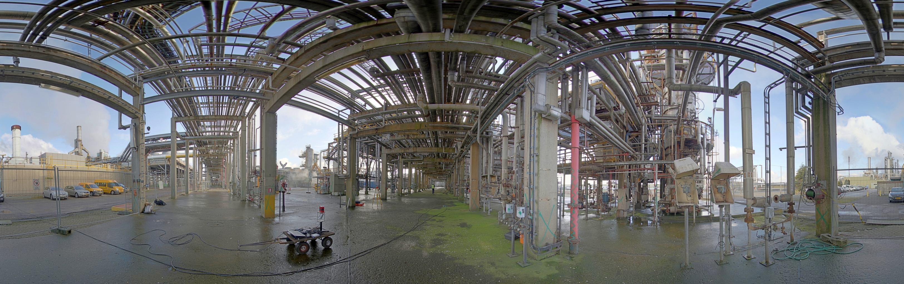
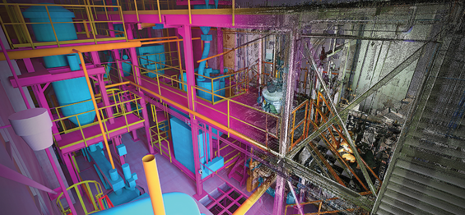

GIPA
The ICON project GIPA or Generic Interoperability Platform for Augmented reality applications took place in 2014 and 2015. The aim was to develop a generic AR platform able to serve a whole range of applications including but not limited to remote collaboration, remote expert aid, serious gaming and training, critical infrastructure management and disaster or crisis support. As an example use case, we focused on the application of ‘as-built-as-planned’, in which the goal is to give architects the ability to verify whether or not a construction is built according to their plans. The main partner in this use case was Sweco Belgium, formerly known as Grontmij. More information can be found on the project website.
To achieve the goal, a system had to be designed that is able to obtain reconstructions from large-scale environments with sub-centimeter accuracy in a `reasonable’ amount of time. As mentioned before, the problem of 3D reconstruction or mapping is closely related to the one of localization. The main challenge here is that the system had to be independent from any external positioning system such as GPS or any other Global Navigation Satellite System (GNSS) as it also had to work indoor or in environments where the GPS signal is too unreliable. Typical examples are industrial or chemical plants with lots of overhanging pipelines (see figure below), causing the GPS signal to be lost or highly inaccurate at times.

In summary, the software had to be able to perform 3D mapping - and thus also 3D positioning - based on data originated from depth sensors. In the end, we succeeded to build a system, fully independent of external positioning devices, that is able to deliver 3D point cloud models on the fly (in near real-time) with sub-centimetre accuracy. The results and outcomes of this research were presented and published at the international conference Intelligent Vehicles (IV) (2016), the international Conference on Communications and Electronics (ICCE) (2017) and the Scientific Journal Sensors (2016).
For the second part of the use case, algorithms had to be developed to match the reconstructed 3D model - initially represented by a point cloud - with an existing computer-aided design (CAD) model or building information model (BIM) that is available in a remote database. The latter process is often referred to as the scan2BIM problem. It had to be possible to overlay this CAD or BIM model in the view of an architect wearing a head-mounted device, thereby pointing out potential anomalies.

At the end of the project, we could successfully fit existing geometric primitive models - such as cylinders and planes - to the scanning data in real-time. In doing so, we made it possible to verify whether or not the constructions on site were correctly carried out.